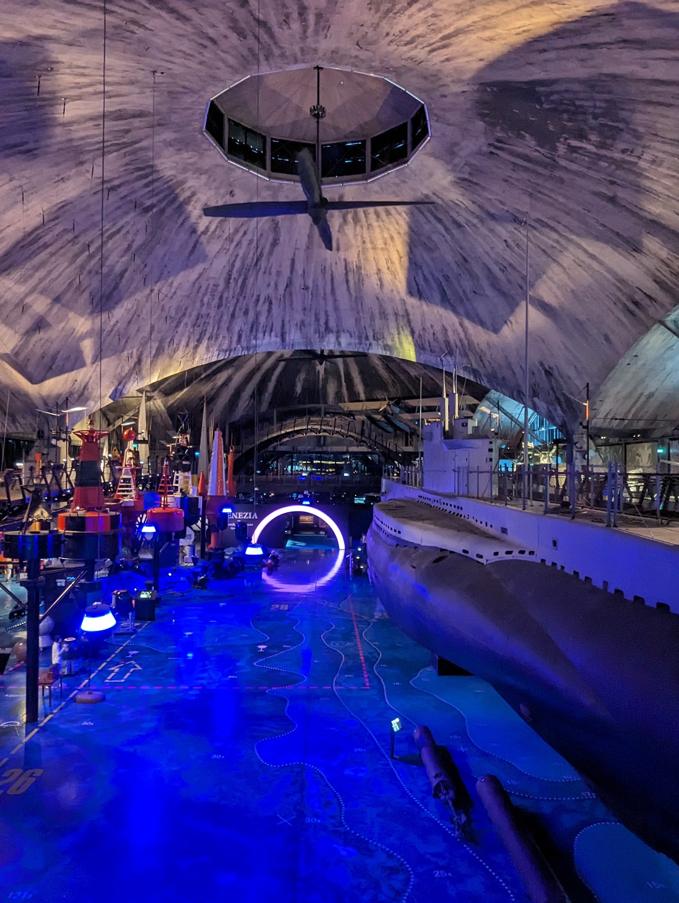

My internship abroad in Estonia
The following week I continued the struggle to update Nunavut inside of Nunaweb.
Ladies and Gentleman, with much pleasure I am happy to tell you that I got it running on Wednesday.
The next task was to add a C++ functionality to the site, which I managed to do on Thursday.
I finally managed to push everything into my branch and end the work for the week.
Monday-Tuesday, July 10th-14th
The weekend I decided to visit the Estonian maritime museum.
I can wholeheartedly recommend it to everybody visiting Tallinn.
It is located in an old shipyard for submarines from that was constructed during the russian tsardom occupation and it displays the history of civil and military maritime history in Estonia, with big canons, many interactive objects and A WHOLE FREAKN' SUBMARINE to explore.

But luck was shining on me this weekend and after I left the museum, I realized that there was a waterfront with a festival for the whole weekend.
I purchased many goodies, ate some good salmon and attended the live performance of an Russian and Estonian musician called nublu.
In typical Berlin fashion I didn't wait stand at the side, but decided to jump right into the middle of the crowd and enjoy the music, without understanding a single word.
On sunday, at a different corner of the same waterfront I found a dinosaur with a very specific resemblence to my favourite ancient lizard.
find the differences :D
Saturday-Sunday, July 15th-16th